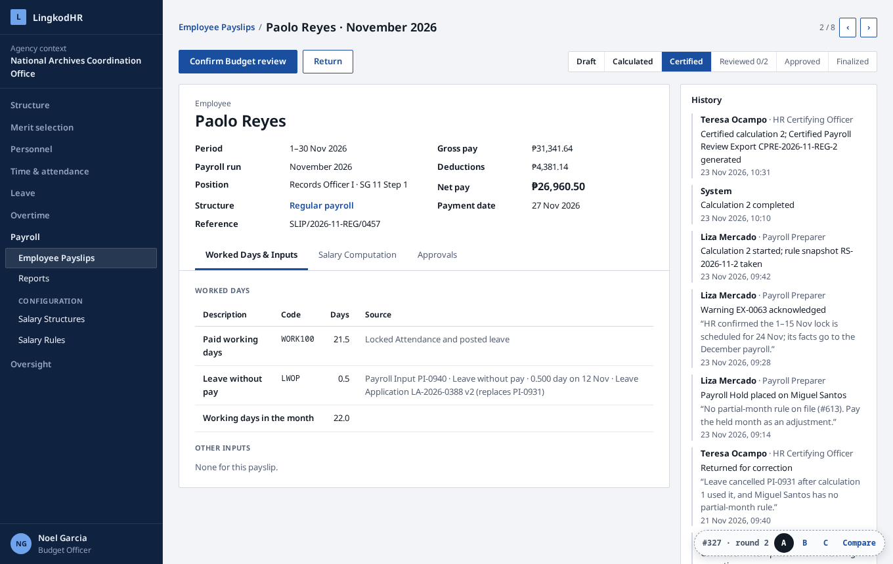
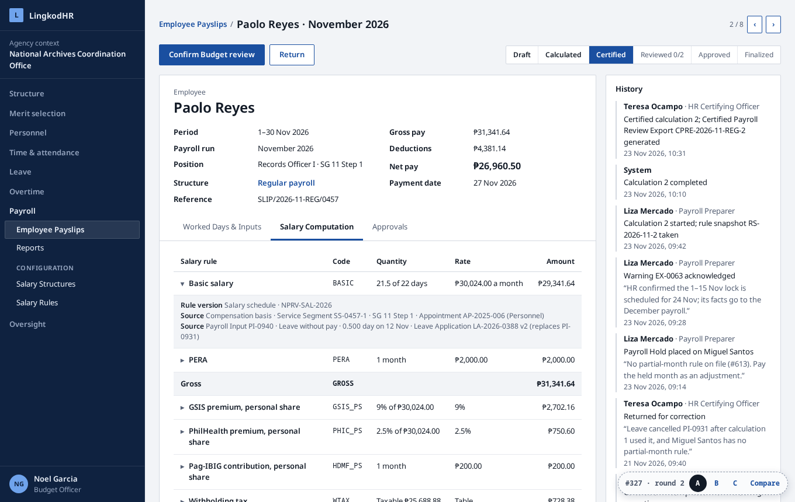
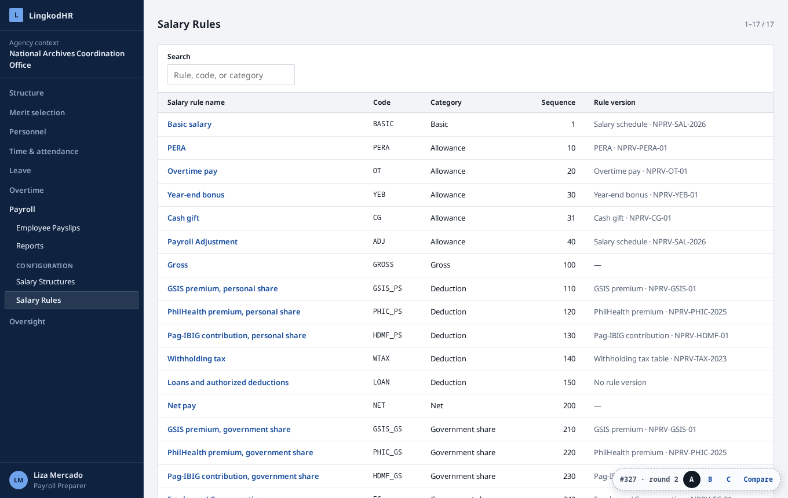
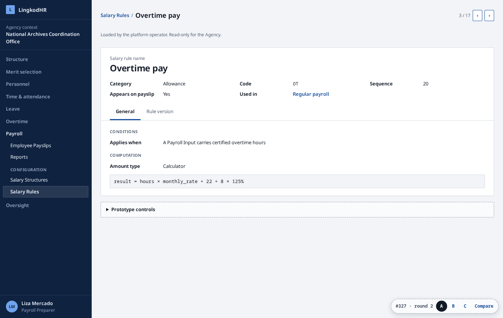
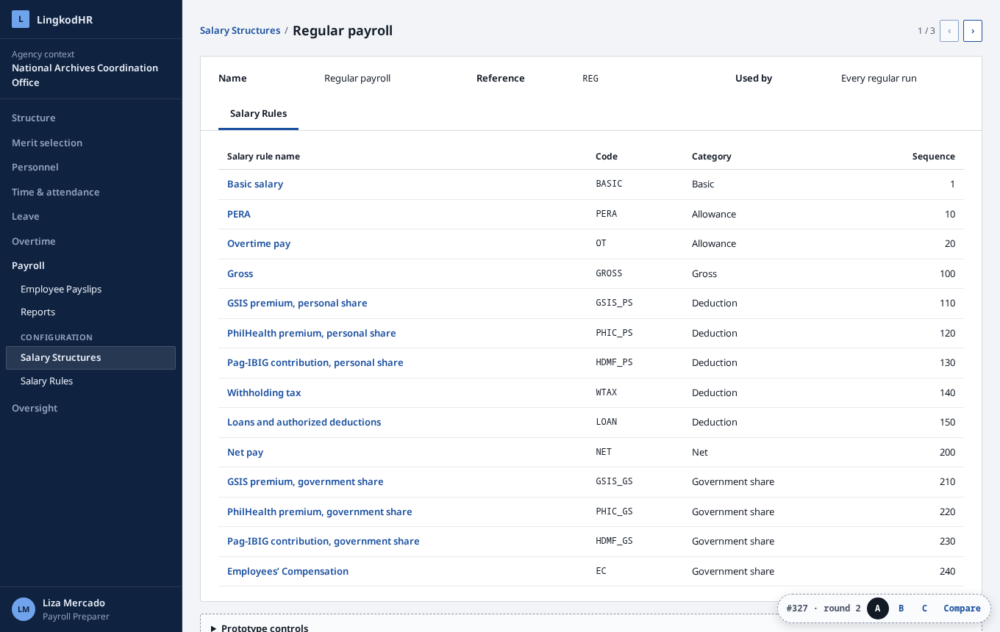
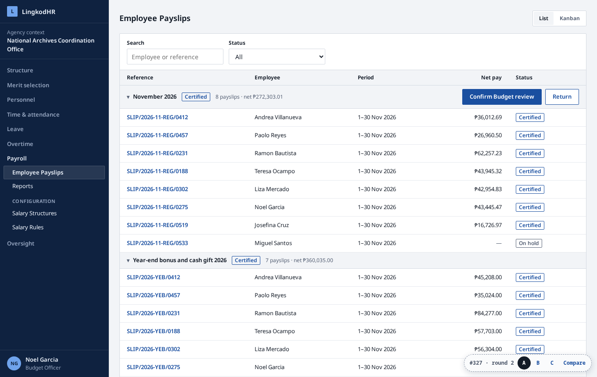
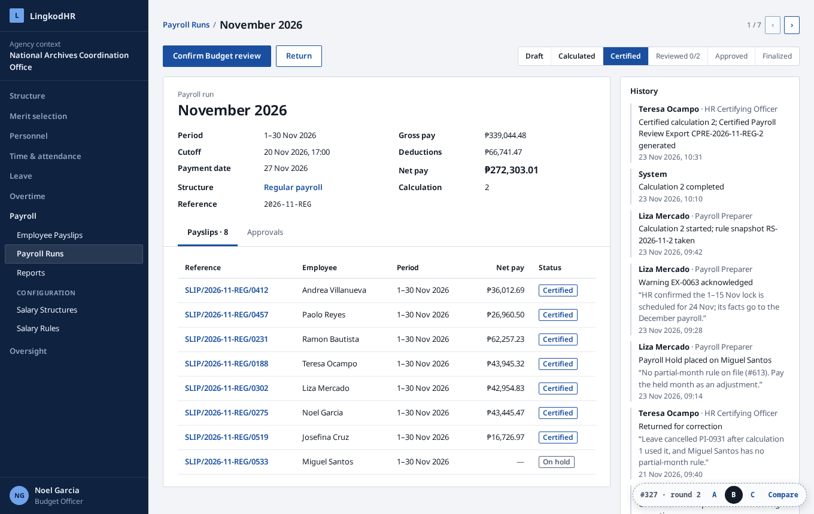
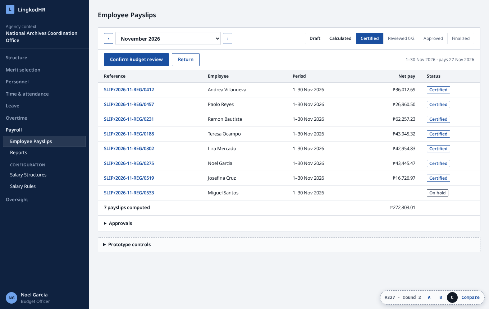

Round 1 was too heavy. This round takes the shape of your references: Employee Payslips, Salary Structures, and Salary Rules, each a list and a form, in LingkodHR’s existing theme. The four screens below are the same in A, B, and C. The variants differ in one thing only: where the payroll-wide steps sit.





The payslip list is the whole workspace. Payslips group by month, and the group row carries the stage and the one next step. No screen exists for the payroll run.

One more list and form: Payroll Runs. The run form holds the steps, the totals, the approvals, and its payslips. Employee Payslips stays a flat list.

Employee Payslips shows one month at a time. A bar above the list picks the month and carries the stage bar and the next step.

| Job | A · Payslips only | B · Payslips and runs | C · Month bar |
|---|---|---|---|
| Compute, certify, review, approve, finalize | Month group row, and every payslip form | Payroll run form | Month bar |
| Who approved what, and when | Approvals tab on a payslip | Approvals tab on the run | Approvals, folded under the list |
| Run totals | Month group row (count and net) | Run form (gross, deductions, net) | Footer of the list |
| One Employee across months | Search the payslip list | Search the payslip list | Step through months |
| Hold, withhold, payment outcome | Payslip form, the same in all three | ||
| Register, schedules, Payment Export | Reports, the same in all three | ||
| Employee’s own payslip | The same payslip form, released payslips only | ||
Your references allow things the decided payroll rules refuse. This round stays inside those rules; say so if any should change.
| In the references | In this round | Why |
|---|---|---|
| Salary rules are created and edited, with Python code | Rules are read-only, shown with a plain “result = …” line | No free-form formula; rule versions are loaded by the platform operator (#328) |
| “Add a line” on Worked Days, Inputs, and Computation | Lines are read-only and open to their source | No override of a calculated line; inputs come only from Leave, Overtime, and Attendance (#27, #43) |
| Each payslip moves Draft → Done on its own | The stage belongs to the month’s payroll; every payslip in it shows the same stage | Status lives on the Payroll Period, with certification, two reviews, and approval before finalization (#12) |
| No payslip batch | A hides it, C makes it a month picker, B shows it as Payroll Runs | The Payroll Period already is the batch, so it is in the spec |
| Salary Structure per contract | Three read-only structures, picked by the kind of payroll | Not in the spec; shown as an assumption |
| A “Paid” state | Payment is separate: a Payment Export, then recorded outcomes | Generating an export marks no one paid (#330) |
The same in A, B, and C: the existing workbench tokens from apps/web/src/app/globals.css. No new color or font.
#0f2240#f2f4f7#ffffff#d4d9e1#121a26#566175#1a4fa0#1e6b3a#9a6200#a4262cRound 1 is kept under round-1/.